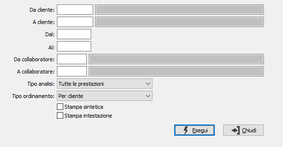

Lista movimenti prestazioni
Il programma effettua la stampa dei movimenti esistenti in archivio in base ai parametri inseriti dall’utente.
E’ possibile stampare i movimenti relativi ad un cliente e/o un collaboratore entro limiti di data specificati.
E’ possibile selezionare solo i movimenti da addebitare oppure tutti i movimenti oppure solo quelli addebitati.

DA CLIENTE: eventuale codice del cliente, presente in anagrafica, da cui si vuole iniziare la selezione di analisi. Confermando a vuoto, la selezione inizia dal primo cliente valido. Sul campo sono attive le funzioni di ricerca (F9).
A CLIENTE: eventuale codice del cliente, presente in anagrafica, con cui si vuole terminare la selezione di analisi. Confermando a vuoto, la selezione termina con l'ultimo cliente valido. Sul campo sono attive le funzioni di ricerca (F9).
DA DATA: eventuale data del movimento da cui deve iniziare l’analisi dei movimenti relativamente ai precedenti parametri di selezione. Confermando a vuoto, l’analisi inizia con il primo movimento valido.
A DATA: eventuale data del movimento con cui si desidera terminare l’analisi dei movimenti relativamente ai precedenti parametri di selezione. Confermando a vuoto, l’analisi si conclude con l'ultimo movimento valido.
DA COLLABORATORE: eventuale codice del collaboratore da cui si vuole iniziare la selezione di analisi. Confermando a vuoto, la selezione inizia dal primo collaboratore valido. Sul campo sono attive le funzioni di ricerca (F9).
A COLLABORATORE: eventuale codice del collaboratore con cui si vuole terminare la selezione di analisi. Confermando a vuoto, la selezione termina con l'ultimo collaboratore valido. Sul campo sono attive le funzioni di ricerca (F9).
TIPO ANALISI: consente di selezionare per l'analisi i soli movimenti da addebitare oppure tutti i movimenti oppure solo quelli addebitati.
TIPO ORDINAMENTO: definisce il tipo ordinamento della stampa: per cliente, per collaboratore.
STAMPA SINTETICA: indica se effettuare la stampa in formato sintetico (casella con segno di spunta) o completa (casella vuota).
STAMPA INTESTAZIONE: indica se deve essere stampata come prima pagina del report una pagina contenente tutte le informazioni inerenti i criteri di selezione specificati per il report stesso (casella con segno di spunta).
Confermando tramite pressione del bottone Esegui, viene avviata la stampa della lista che riporta le informazioni sui movimenti selezionati.